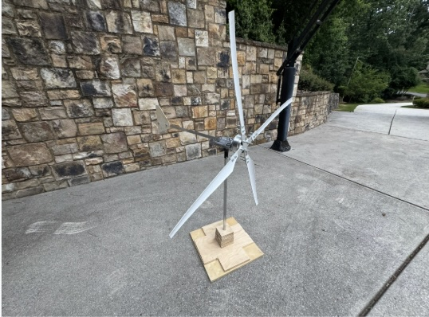
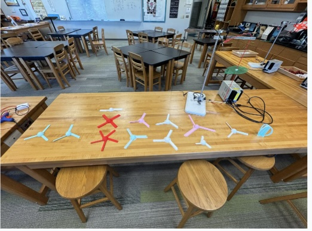

01 / Wind turbine engineering
Project objective
I wanted to design and build a functioning small wind turbine using accessible components rather than treating the project as a purely theoretical study. The resulting prototype integrates a repurposed hoverboard motor, custom rotor assemblies and electrical generation, with testing to understand how the system performs under different operating conditions.

02 / Wind turbine engineering
Electromechanical design and fabrication
I hand-fabricated the turbine using PVC rotor assemblies and repurposed hoverboard motors. A motor used as a generator converts mechanical rotation into electrical output; the aerodynamic rotor and generator must operate together for useful power production.
Energy conversion
- 01AirflowAvailable kinetic energy
- 02RotorAerodynamic torque and rotation
- 03GeneratorMotor used for electrical generation
- 04Electrical loadMeasure current and power
Mechanical design decisions involve rotor geometry, rotational balance, support stiffness and the mechanical/electrical interface. The prototype was a way to explore these tradeoffs through actual assembly and testing rather than assuming a nominal aerodynamic design would translate directly to electrical performance.
03 / Wind turbine engineering
Blade CAD and preliminary CFD
I CAD-modeled rotor blade geometries and performed preliminary computational fluid dynamics to examine airflow velocity, surface-pressure distributions and flow patterns around candidate profiles. The study helped evaluate blade-profile refinements and aerodynamic tradeoffs for future iterations.
Aerodynamic performance depends on geometry and operating conditions; qualitative differences in pressure and velocity fields provide useful insight, but they do not establish a final optimized design without mesh, boundary-condition and experimental validation.
The cubic dependence on wind speed is one reason comparisons between operating conditions must be made carefully. This expression represents available wind power, not the measured electrical output of the prototype.
04 / Wind turbine engineering
Experimental measurement and performance
During performance tests, the prototype demonstrated 15–20 W of continuous electrical power. I measured current and electrical power under varied operating conditions and generated performance curves to interpret output trends.
Measured electrical power is distinct from aerodynamic power extracted by the blades: generator losses, mechanical losses and the electrical load all affect the reported output. A useful performance curve needs its operating conditions and measurement method recorded alongside the data.

15–20 W is a measured continuous electrical output range from prototype testing. CFD was preliminary, and no overall efficiency, power coefficient, optimized blade performance or rated wind speed is claimed without the corresponding experimental records.
05 / Wind turbine engineering
Technical paper and future work
I authored a 30-page technical paper documenting the experimental methods, fabrication and aerodynamic optimization study. The project connects energy-conversion theory with the practical limitations of building and measuring a real system.
Further work could compare blade variants under repeatable inflow and load conditions, document uncertainty in the measurements and use those data to validate aerodynamic predictions. The existing prototype provides a physical baseline for that work.
Related work
See particle detector research for experimental instrumentation and quantitative data analysis.
View all projects